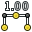
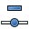

The Draft workbench allows to quickly draw simple 2D objects in the current document, and offers several tools to modify them afterwards. Some of these tools also work on all other FreeCAD objects, not only those created with the Draft workbench. It also provides a complete snapping system, and several utilities to manage objects and settings.
Contents
Crtanje Objekata
These are tools for creating objects.
- Line: Draws a line segment between 2 points
-
 Wire: Draws a line made of multiple line segments (polyline)
Wire: Draws a line made of multiple line segments (polyline) -
 Circle: Draws a circle from center and radius
Circle: Draws a circle from center and radius - Arc: Draws an arc segment from center, radius, start angle and end angle
- Ellipse: Draws an ellipse from two corner points
- Polygon: Draws a regular polygon from a center and a radius
- Rectangle: Draws a rectangle from 2 opposite points
- Text: Draws a multi-line text annotation
-  Dimension: Draws a dimension annotation
- BSpline: Draws a B-Spline from a series of points
-
 Point: Inserts a point object
Point: Inserts a point object -
 ShapeString: The ShapeString tool inserts a compound shape representing a text string at a given point in the current document
ShapeString: The ShapeString tool inserts a compound shape representing a text string at a given point in the current document - Facebinder: Creates a new object from selected faces on existing objects
-
 Bezier Curve: Draws a Bezier curve from a series of points
Bezier Curve: Draws a Bezier curve from a series of points - Label: Places a label with an arrow pointing to a selected element available in version 0.17
{kind=link}
{kind=link}
{kind=link}
{kind=link}
{kind=link}
{kind=link}
{kind=link}
{kind=link}
{kind=link}
{kind=link}
Preinači Objekte
These are tools for modifying existing objects. They work on selected objects, but if no object is selected, you will be invited to select one.
- Move: Moves object(s) from one location to another
- Rotate: Rotates object(s) from a start angle to an end angle
- Offset: Moves segments of an object about a certain distance
-
 Trim/Extend (Trimex): Trims or extends an object
Trim/Extend (Trimex): Trims or extends an object - Upgrade: Joins objects into a higher-level object
- Downgrade: Explodes objects into lower-level objects
- Scale: Scales selected object(s) around a base point
- Drawing: Writes selected objects to a Drawing sheet
- Edit: Edits a selected object
-
 Wire to BSpline: Converts a wire to a BSpline and vice-versa
Wire to BSpline: Converts a wire to a BSpline and vice-versa -
 Add point: Adds a point to a wire or BSpline
Add point: Adds a point to a wire or BSpline -  Delete point: Deletes a point from a wire or BSpline
-
 Shape 2D View: Creates a 2D object which is a flattened 2D view of another 3D object
Shape 2D View: Creates a 2D object which is a flattened 2D view of another 3D object -
 Draft to Sketch: Converts a Draft object to Sketch and vice-versa
Draft to Sketch: Converts a Draft object to Sketch and vice-versa -
 Array: Creates a polar or rectangular array from selected objects
Array: Creates a polar or rectangular array from selected objects -
 Path Array: Creates an array of objects by placing the copies along a path
Path Array: Creates an array of objects by placing the copies along a path -
 Clone: Clones the selected objects
Clone: Clones the selected objects - Mirror: Mirrors the selected objects
- Stretch: Stretches the selected objects available in version 0.17
{kind=link}
{kind=link}
{kind=link}
{kind=link}
{kind=link}
{kind=link}
{kind=link}
{kind=link}
{kind=link}
{kind=link}
{kind=link}
Uslužni alati
Additional tools available via right-click context menu, depending on the selected objects.
-
 Set working plane: Sets a working plane from a standard view or a selected face
Set working plane: Sets a working plane from a standard view or a selected face - Finish line: Ends the drawing of the current wire or bspline, without closing it
- Close line: Ends the drawing of the current wire or bspline, and closes it
- Undo line: Undoes the last segment of a line
-
 Toggle construction mode: Toggles the Draft construction mode on/off
Toggle construction mode: Toggles the Draft construction mode on/off -
 Toggle continue mode: Toggles the Draft continue mode on/off
Toggle continue mode: Toggles the Draft continue mode on/off - Apply style: Applies the current style and color to selected objects
-
 Toggle display mode: Switches the display mode of selected objects between "flat lines" and "wireframe"
Toggle display mode: Switches the display mode of selected objects between "flat lines" and "wireframe" -
 Add to group: Quickly adds selected objects to an existing group
Add to group: Quickly adds selected objects to an existing group -
 Select group contents: Selects the contents of a selected group
Select group contents: Selects the contents of a selected group -
 Toggle snap: Toggles object snapping on/off
Toggle snap: Toggles object snapping on/off -
 Toggle grid: Toggles the grid on/off
Toggle grid: Toggles the grid on/off - Show snap bar: Shows/hides the snapping toolbar
- Heal: Heals problematic Draft objects found in very old files
-
 Flip Dimension: Flips the orientation of the text of a dimension
Flip Dimension: Flips the orientation of the text of a dimension - VisGroup: Creates a VisGroup in the current document
-
 Slope: Changes the slope of selected Lines or Wires available in version 0.17
Slope: Changes the slope of selected Lines or Wires available in version 0.17
{kind=link}
{kind=link}
{kind=link}
{kind=link}
{kind=link}
{kind=link}
{kind=link}
- AutoGroup: Automatically place new objects in a given group available in version 0.17
{kind=link}
-
 Set Working Plane Proxy: Add a proxy object in the document to store a Working Plane position available in version 0.17
Set Working Plane Proxy: Add a proxy object in the document to store a Working Plane position available in version 0.17
- Add to Construction group: Add selected objects to the Construction group available in version 0.17
Postavke
-
 Preferences...: Preferences disposable in Draft Tools.
Preferences...: Preferences disposable in Draft Tools.
File formats
The Draft module provides FreeCAD with importers and exporters for the following file formats:
-
 Preference ... Import Export
Preference ... Import Export
- Autodesk .DXF: Imports and exports Drawing Exchange Format files created with 2D CAD applications
- SVG (as geometry): Imports and exports Scalable Vector Graphics files created with vector drawing applications
- Open Cad format .OCA: Imports and exports OCA/GCAD files, a potentially new open CAD file format
- Airfoil Data Format .DAT: Imports DAT files describing Airfoil profiles
- Autodesk .DWG: Import and exports DWG files via the DXF importer, when the Teigha Converter utility is installed.
- FreeCAD and DWG Import: Import and exports DWG files
- FreeCAD and DXF Import: Import and exports DXf files
Additional features
- Snapping: Allows to place new points on special places on existing objects
- Constraining: Allows to place new points horizontally or vertically in relation to previous points
- Working with manual coordinates: Allows to enter manual coordinates instead of clicking on screen
- Working plane: Allows you to define a plane in the 3D space, where next operations will take place
Scripting
The Draft module features a complete Draft API so you can use its functions in scripts and macros